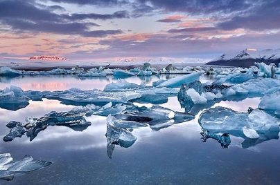
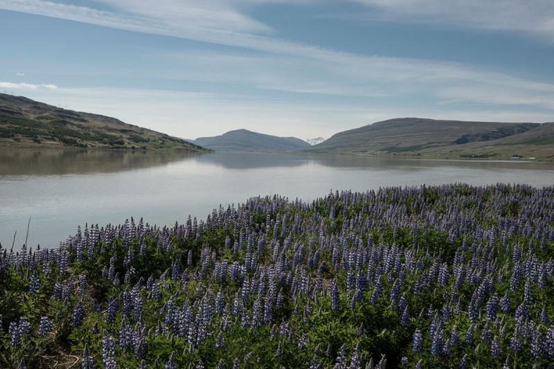

Jökulsárlón
Jökulsárlón er á endanum á jökli og er það sporlón. Jökulsárlón er frægasta jökulsárlónið á Íslandi. Vatnið kemur úr skriðjöklinum Breiðamerkurjökul og er hann í hveljöklinum Vatnajökli. Margir ísjakarnir eru ekki bara hvítir heldur er líka svört aska úr eldgosum og eru þeir líka bláir. Ísjakarnir eru margir mjög háir. Ísjakarnir fara síðan út í sjóinn og hverfa í hann eða fara í Breiðamerkursand og bráðna þar.

Lagarfljót
Lagarfljót er jökulá. Áin er 140 km frá upptökum Jökulsár í Fljótsdal til ósa Lagarfljóts í Héraðsflóa. Það er stöðuvatn í Lagarfljóti sem heitir Lögurinn og er Lagarfljótsormurinn talin búa þar. Lagarfljót er á milli Egilsstaða og Fellabæ. Dýpi stöðuvatnsins er 112 metra og er næst lægsti staður Íslands.
